6 axle combinations
Up to 47 tonne capacityHigh-capacity bulk transport for approved routes and large-volume material movements.
A modern, high-capacity fleet built for productivity, reliability and safe operation.
We match truck and trailer configurations to payload, route, access and discharge requirements.
High-productivity combinations and flexible trailer options for quarry, civil, concrete and infrastructure applications.
High-capacity bulk transport for approved routes and large-volume material movements.
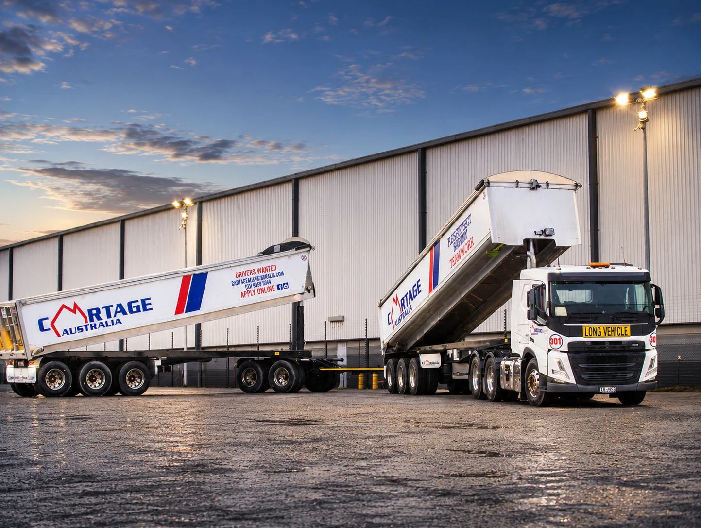
High-productivity combinations for approved networks and major-volume projects.
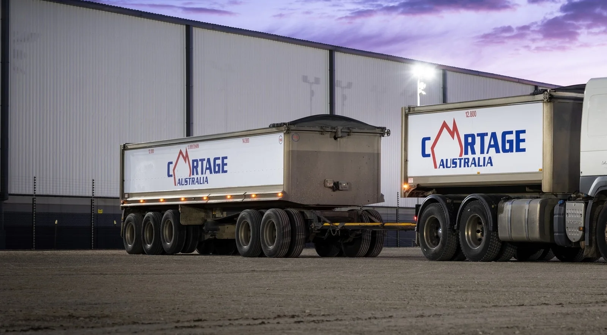
Flexible equipment suited to quarry delivery, civil work and metropolitan operations.
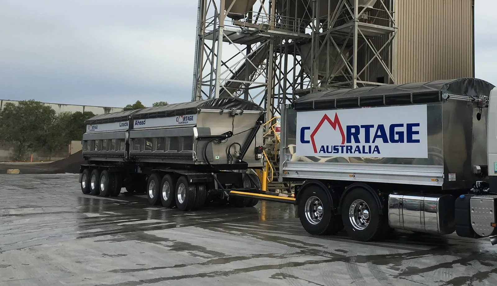
Designed for controlled discharge and project environments where tipping conditions require flexibility.
Volvo FM and FMX trucks form the backbone of our fleet, providing strong on-road performance, advanced safety technology, efficient Euro 6 powertrains and dependable whole-of-life support.
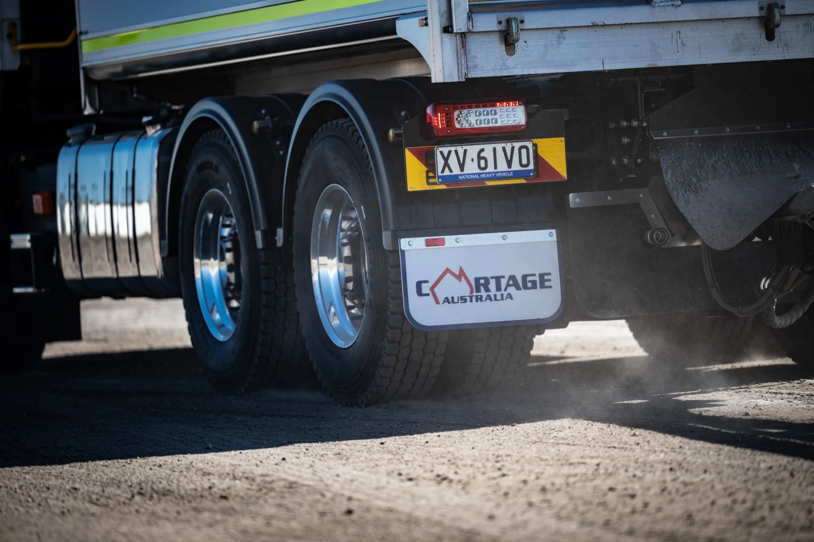
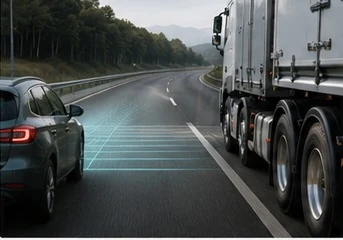
Intelligent safety technology helps support drivers and protect other road users.
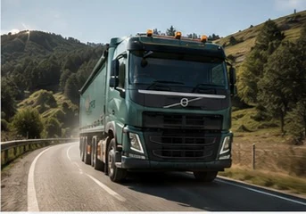
Powerful and cleaner engines provide reliable performance with lower emissions.
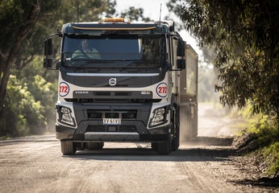
Technology and driveline optimisation help reduce fuel use without compromising performance.
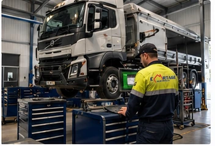
Robust construction and structured maintenance support keep the fleet available.
Our modern fleet is supported by 24/7 operational oversight, integrated compliance technology and purpose-built equipment designed to deliver dependable performance on every task.

Our operations office is maintained around the clock, with live fleet monitoring supporting safe and professional driving standards. GPS data is used to monitor rest breaks and vehicle speed, while drivers receive automatic alerts when a break is due. Potential fatigue or speed breaches are escalated immediately for review and action.
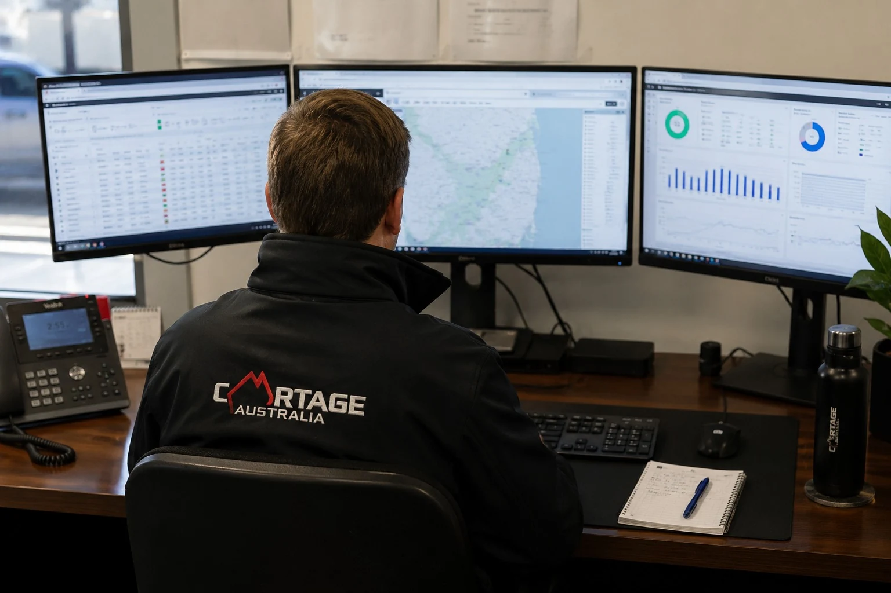
GPS tracking is only the foundation of our connected fleet. Electronic pre-starts, live in-cab messaging, road- and driver-facing safety cameras and digital reporting provide our team with timely information to manage risk, compliance and performance. Cartage Australia has consistently led the industry in the early adoption of practical technology, equipment and process innovation.
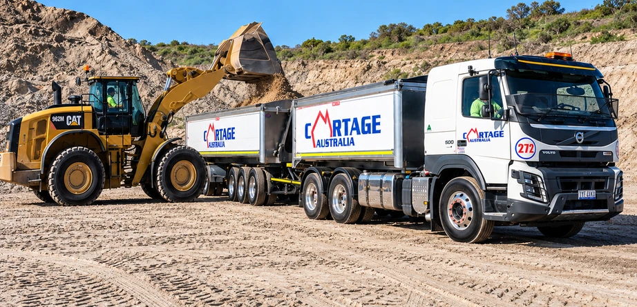
Cartage Australia has a long history of leading productivity improvements, introducing Victoria's first 5-axle trailer combination and later its first 6-axle configuration. Our purpose-built combinations maximise payload while incorporating advanced safety systems suited to demanding quarry, civil and infrastructure work.
Preventative maintenance, daily inspections and formal defect-management processes keep our equipment operating safely and reliably.
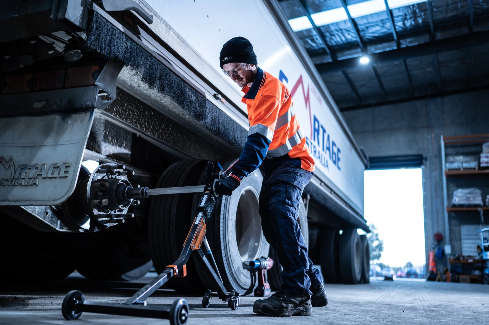
Scheduled inspections and servicing based on manufacturer requirements and operating conditions.
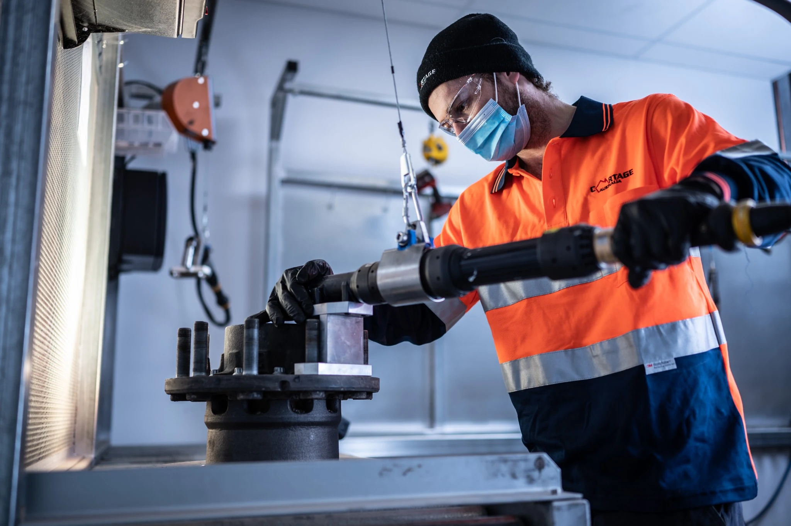
Experienced maintenance teams and specialised tools support consistent workmanship.
Vehicle data, electronic work orders and defect reporting support early intervention.
Speak with our team about capacity, payload and route requirements.
Tell us about the work and your email app will open with the completed enquiry.